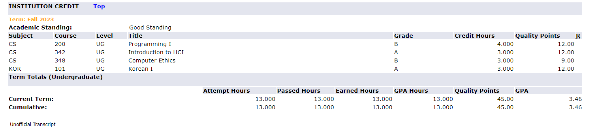
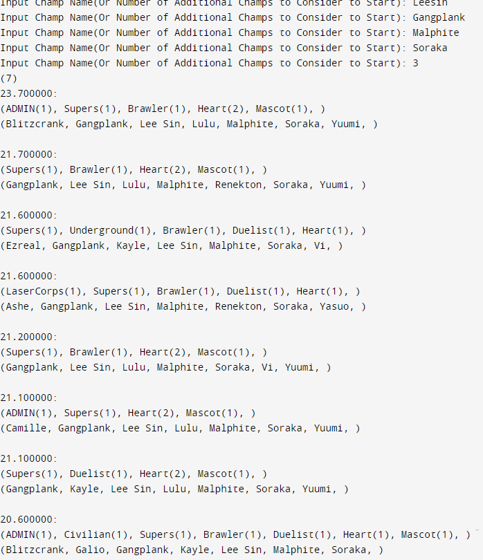

About Me
As a dedicated student developer with a deep-rooted passion for gaming, I have found a special connection with Riot Games. My journey with their flagship games, League of Legends, spans over a decade. With my time with Team Fight Tactics starting right from release. This long-standing engagement has evolved into a dream to contribute to a company that's been a significant part of my life. My commitment extends beyond gaming. I resonate strongly with Riot Games' mission of diversity and inclusion. This is evidenced by my volunteer work with the Chicago Asian Women Empowerment, a 501(c) nonprofit, where I've had the opportunity to make a meaningful difference in the community. Academically, I have pursued a robust set of Computer Science courses, constantly seeking to expand my knowledge. This doesn't just end in the classroom; I am also an avid learner in solving questions on leetcode.com and continually seek out new knowledge online. This self-driven learning ethos underscores my approach to both personal and professional development. I pride myself on my strong communication skills, which I believe are crucial in a collaborative and innovative environment like Riot Games. Whether it's discussing complex technical problems or brainstorming creative ideas, I thrive in settings that require clear and effective communication. I would be thrilled to design & develop new features and systems for products as well as on the live balance of the current set! I am excited about the possibility.
Resume
View ResumeTranscripts
Transcripts Harold Washington College 2.98 GPANortheastern Illinois Univeristy, Currenty attending 3.46 GPA Expected Graduation Spring 2025 
Coding Projects
- Leetcode questions
The was an application meant to build you a Comp in TfT set 8. This set had heroes so it was important to build your comp around them, in addition to the very powerful 'super' trait. To use Input the first 3 characters/more of the champion you want to include, Such as 'Gan' = gangplank. Once you've input the desired number of champions enter 'exit' to run the program. The program will output suggested comps that use these champions and score them based on a weight of traits coded in by me, based on the meta at the time.
This is a repo collection of questions i've solved on leetcode.com